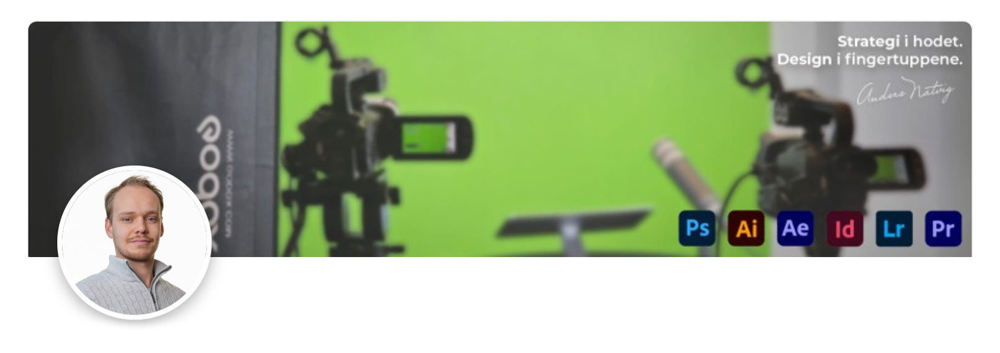

7EVNT
Grafisk profil for en lyd, lys og event startup
Kommunikasjonsrådgiver
Strategi, tekst, kampanjer og visuell produksjon.
Jeg jobber med tekst, design, foto og video, og velger format etter hva kommunikasjonen skal oppnå.
Grafisk profil, film, foto og innhold til sosiale medier.
Grafisk profil for en lyd, lys og event startup
Grafisk profil for en content creator
Videoer og filmer jeg har produsert
Russelogo design med video og genser design
Utvalg av SoMe-poster jeg har produsert
Ulike fotooppdrag jeg har gjennomført
Fra behov og budskap til innhold og effekt.

Først forstå. Så kommunisere.
God kommunikasjon starter før noe blir skrevet, filmet eller publisert. Jeg begynner med behovet: Hvem skal vi nå, hva skal de sitte igjen med, og hvor møter vi dem best? Derfra bygger jeg budskap, kanalvalg og tiltak rundt målet vi ønsker å nå.
Riktig format for riktig budskap
Noen ganger er løsningen en artikkel. Andre ganger en kampanje, video, nettsidetekst eller SoMe-post. Jeg jobber med tekst, design, foto og video, og velger format etter hva kommunikasjonen skal oppnå.
Kommunikasjon skal gjøre en jobb
Publisering er ikke slutten på arbeidet. Jeg følger med på rekkevidde, engasjement og respons for å forstå hva som fungerer og hva som bør gjøres annerledes neste gang. Målet er ikke mest mulig innhold, men kommunikasjon som når fram.